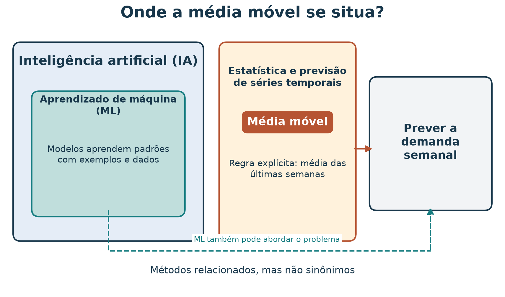
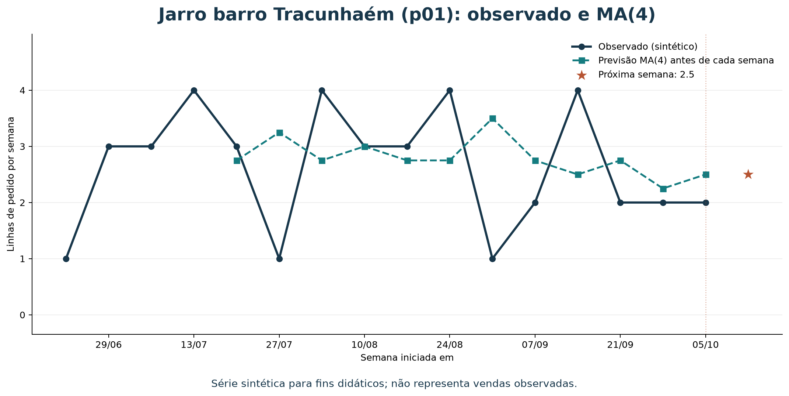
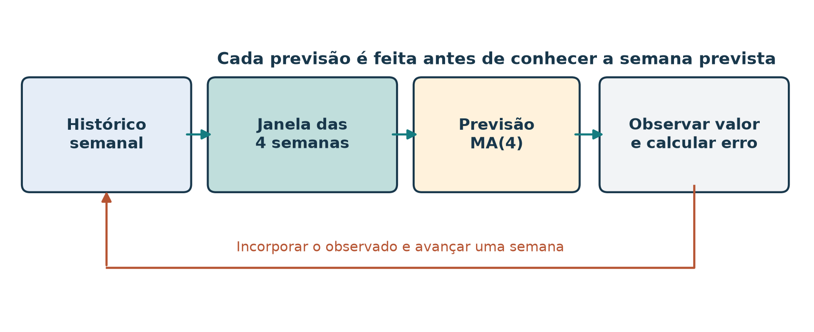
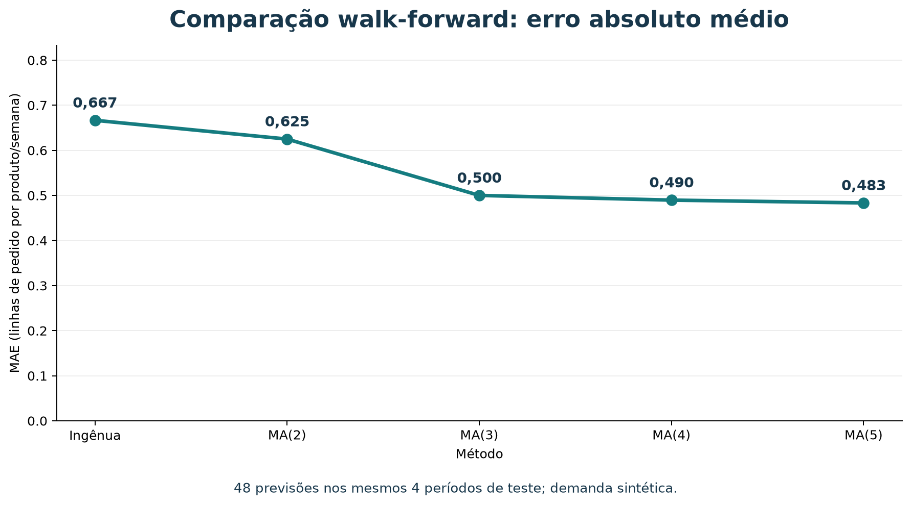
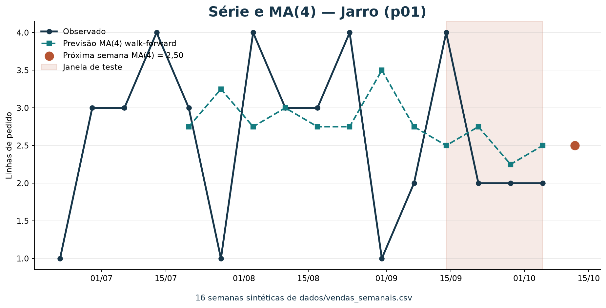
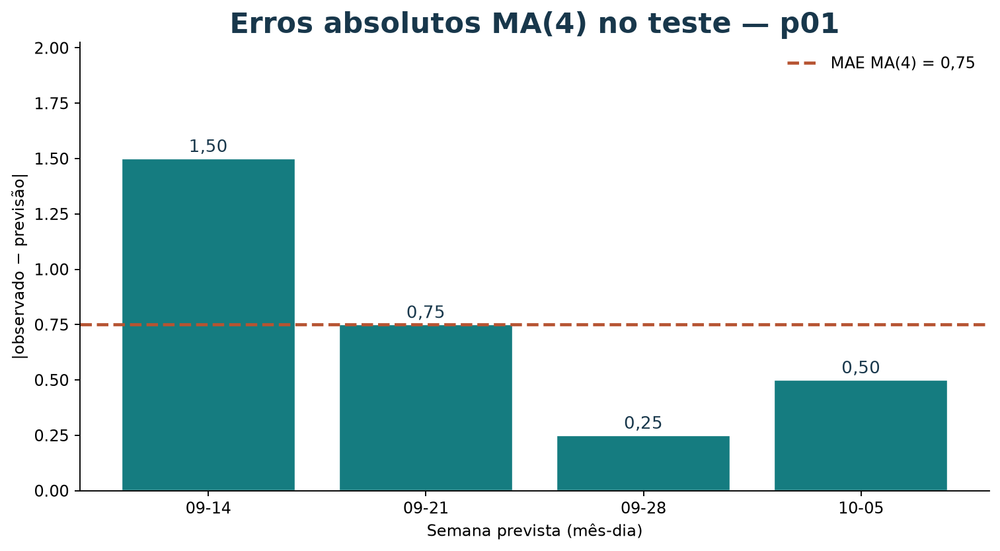
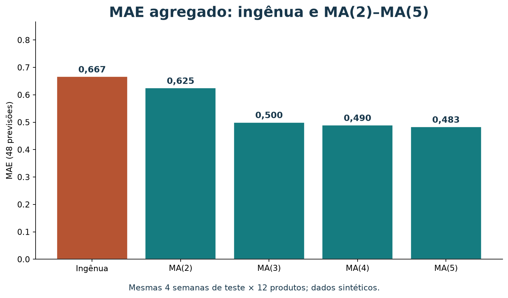

Previsão de demanda semanal com média móvel
Leia a versão web com o explorador interativo incorporado.
Ao concluir este tutorial, você deverá conseguir organizar vendas semanais por produto, calcular uma previsão com média móvel, comparar o resultado com uma previsão ingênua, interpretar um erro de previsão e explorar a série com um painel de BI. Você também distinguirá a previsão de uma contagem semanal da popularidade usada pelo recomendador.
Os dados deste exercício são sintéticos. As 16 semanas distribuem os totais de pedidos já existentes no catálogo. Elas servem para praticar o método e o painel; o desempenho numa loja real exigiria histórico observado e avaliação própria.
Roteiro de estudo
Você pode seguir o roteiro abaixo em aproximadamente 65 minutos ou consultar cada seção separadamente.
| Tempo sugerido | Atividade de estudo |
|---|---|
| 5 min | Entender o problema, a unidade e os dados |
| 8 min | Aprender a média móvel e calcular um exemplo à mão |
| 10 min | Executar o código com pandas |
| 12 min | Comparar janelas em avaliação temporal |
| 7 min | Interpretar resultados e limitações |
| 15 min | Explorar a série com BI e exportar uma evidência visual |
| 10 min | Resolver o exercício |
Como este método se encaixa em IA e aprendizado de máquina
Inteligência artificial (IA) é o campo amplo que estuda sistemas capazes de realizar tarefas como aprender, raciocinar, perceber e apoiar decisões. Aprendizado de máquina (ML) é uma área da IA em que algoritmos aprendem padrões a partir de dados. Métodos estatísticos de previsão e modelos de ML podem abordar o mesmo problema por caminhos distintos.
Previsão de demanda é um problema: estimar valores futuros com base em informações disponíveis. Estatística e previsão de séries temporais oferecem métodos como médias móveis; ML pode usar características e exemplos históricos para ajustar um modelo; regras de negócio também podem fornecer referências simples. Esses caminhos podem se complementar.

Figura 1 — O problema de prever demanda pode ser abordado por métodos estatísticos ou de ML. A média móvel deste tutorial é um baseline estatístico transparente, não um modelo treinado de ML. O diagrama é conceitual; as formas não indicam proporções ou fronteiras formais entre disciplinas.
Neste tutorial, você calcula uma regra fixa: a média das últimas quatro semanas. Não há etapa de ajuste de parâmetros a partir de um conjunto rotulado, embora seja possível escolher o tamanho da janela comparando previsões em dados de desenvolvimento. Se depois comparar esse baseline com um modelo de regressão que aprende a partir de exemplos, estará usando a média móvel como referência para avaliar se a complexidade adicional traz ganho.
1. A pergunta de previsão
Um marketplace de artesanato precisa planejar a próxima semana. Para cada produto, quer responder:
Quantas linhas de pedido deste produto podemos esperar na próxima semana?
Esta é uma tarefa de previsão de série temporal: usamos observações ordenadas no tempo para estimar um valor futuro. A média móvel é uma regra simples, transparente e fácil de calcular. Ela não precisa de um pacote de aprendizado de máquina; pandas ajuda a organizar e resumir os dados.
Neste tutorial, a unidade prevista é linhas de pedido por produto por semana. Uma linha não é necessariamente uma unidade física: um pedido pode conter mais de uma unidade. Para prever unidades, a fonte precisaria registrar quantidades vendidas, e a coluna-alvo teria de ser definida de acordo.
Popularidade não é previsão
O catálogo do recomendador registra pedidos por produto
como um total agregado. Esse valor ajuda a ordenar produtos populares,
mas não tem datas e, sozinho, não revela o comportamento de uma semana
para outra.
A série em ../dados/vendas_semanais.csv
acrescenta as datas necessárias para exercitar um método temporal. Ela
tem 16 semanas, de 22 de junho a 5 de outubro de 2026. Para cada
produto, a soma das semanas é igual ao total pedidos no catálogo. Isso preserva
os dados existentes, mas não transforma a distribuição criada em
histórico real.
As dez cestas do catálogo são exemplos separados para
co-ocorrência entre produtos. Elas não são a origem dos valores semanais
e não devem ser somadas para reproduzir as vendas.
2. Como funciona a média móvel
Uma média móvel de quatro semanas estima a semana seguinte usando a média das quatro observações semanais mais recentes:
y_t é a quantidade observada na semana mais recente; o
acento circunflexo indica uma estimativa, não uma venda já observada. A
janela “se move” quando uma nova semana é conhecida: a observação mais
antiga sai do cálculo e a nova entra.
| Observações semanais | Previsão para a próxima semana |
|---|---|
| 1, 3, 3, 4 | (1 + 3 + 3 + 4) / 4 = 2,75 |
| 3, 3, 4, 3 | (3 + 3 + 4 + 3) / 4 = 3,25 |
Ao avançar uma semana, a primeira janela deixa de incluir o
1 e inclui o 3 mais recente. Cada observação
recebe o mesmo peso. Por isso, uma janela curta responde mais
rapidamente a mudanças, mas tende a oscilar mais; uma janela longa
suaviza mais, mas pode demorar a refletir mudanças.
Conta completa: Jarro barro Tracunhaém
O produto p01 tem as seguintes quatro observações mais
recentes na série:
| Semana iniciada em | Linhas de pedido |
|---|---|
| 2026-09-14 | 4 |
| 2026-09-21 | 2 |
| 2026-09-28 | 2 |
| 2026-10-05 | 2 |
Logo, a previsão de média móvel para a próxima semana é:
Uma previsão fracionária é válida: ela representa uma quantidade esperada, não um pedido literal de meia linha. O arredondamento, quando necessário para uma decisão operacional, deve ser feito na etapa de planejamento e não antes de avaliar o erro do modelo.
Uma referência simples: última semana
Compare a média móvel com uma previsão ingênua:
Para p01, a última semana observada tem 2 linhas, então
essa previsão é 2. A média móvel produz 2,5. Nenhuma regra é sempre
melhor: é preciso compará-las com semanas passadas que não foram usadas
para construir a previsão.
3. Preparar e inspecionar a série
Cada linha do arquivo contém:
| Campo | Significado |
|---|---|
week_start |
Segunda-feira que inicia a semana |
product_id |
Identificador estável do produto |
order_line_count |
Linhas de pedido do produto naquela semana |
O arquivo contém também linhas com zero vendas. Elas são importantes: zero é uma observação válida, não um valor ausente. O exercício exige uma linha por produto por semana; assim, uma semana sem vendas continua explícita.
Antes de modelar, confira os dados:
uv run python scripts/validar_vendas_semanais.pyO validador verifica as 192 combinações de 16 semanas e 12 produtos, ausência de duplicatas, ids conhecidos, contagens não negativas e reconciliação das somas semanais com o catálogo.
O gráfico abaixo mostra a série de p01, previsões de
média móvel feitas somente com semanas anteriores e a previsão para a
semana seguinte. Como a entrada é sintética, as oscilações ilustram a
conta, não um padrão real de procura.

Figura 2 — A previsão de cada semana usa apenas as quatro semanas anteriores. O ponto final é a estimativa para a semana posterior ao histórico disponível.
Abrir os dados com pandas
O código a seguir parte da raiz do repositório. Se pandas não estiver
disponível no ambiente da aula, execute o exemplo com
uv run --with pandas.
from pathlib import Path
import pandas as pd
arquivo = Path("dados/vendas_semanais.csv")
vendas = pd.read_csv(arquivo, parse_dates=["week_start"])
print(vendas.head())
print("Linhas:", len(vendas))
print("Produtos:", vendas["product_id"].nunique())
print("Semanas:", vendas["week_start"].nunique())Saída esperada:
Linhas: 192
Produtos: 12
Semanas: 16Para calcular uma média por produto, transforme a tabela longa em uma matriz: linhas serão semanas e colunas serão produtos. A ordem cronológica é essencial.
matriz = vendas.pivot(
index="week_start",
columns="product_id",
values="order_line_count",
).sort_index()
print(matriz[["p01", "p02"]].tail())Cada célula contém a contagem de um produto numa semana. Se você aplicar esse código a outra fonte em que combinações ausentes significam zero, primeiro complete explicitamente a grade de semanas e produtos. Não converta automaticamente valores ausentes em zero quando eles puderem indicar falha de coleta.
4. Calcular previsões para todos os produtos
A média das quatro linhas finais da matriz é a previsão para a semana seguinte de cada produto. A última linha, por sua vez, é a referência ingênua:
janela = 4
previsoes = pd.DataFrame(
{
"media_movel_4_semanas": matriz.tail(janela).mean(),
"ultima_semana": matriz.iloc[-1],
}
)
previsoes.index.name = "product_id"
print(previsoes.round(2))Para o conjunto sintético, o resultado é:
| ID | Produto | Média móvel 4 semanas | Última semana |
|---|---|---|---|
| p01 | Jarro barro Tracunhaém | 2,50 | 2 |
| p02 | Prato esmaltado Tracunhaém | 1,50 | 1 |
| p03 | Boneca de barro | 1,00 | 0 |
| p04 | Rendeira Alto do Moura | 2,00 | 2 |
| p05 | Toalha de renda | 1,25 | 1 |
| p06 | Caminho de mesa renda | 0,50 | 0 |
| p07 | Xilogravura Pilar | 1,75 | 2 |
| p08 | Cordel ilustrado | 1,25 | 1 |
| p09 | Quadro xilo colorido | 0,25 | 0 |
| p10 | Cesto de palha | 1,25 | 1 |
| p11 | Bolsa de palha | 0,75 | 1 |
| p12 | Sousplat de palha | 0,00 | 0 |
Esses valores são uma demonstração da conta com quatro semanas, não
uma recomendação de estoque. Um valor esperado pode ser fracionário e
não expressa incerteza: a previsão 2,50 não informa, por si
só, se a demanda provável está perto de 2 ou pode variar muito.
5. Avaliar sem olhar para o futuro
Não avalie uma previsão com dados que ela já usou. Uma divisão aleatória pode misturar semanas antigas e futuras entre treino e teste, quebrando a ordem que existe na aplicação. Em previsão, a avaliação deve respeitar o tempo:
| Etapa | Semanas usadas |
|---|---|
| Histórico inicial | 12 primeiras semanas, de 2026-06-22 a 2026-09-07 |
| Teste temporal | 4 últimas semanas, de 2026-09-14 a 2026-10-05 |
Faremos uma avaliação walk-forward (origem deslizante): prever uma semana do período de teste usando apenas as semanas anteriores; depois, quando a semana real já é conhecida, incluí-la no histórico para prever a seguinte. Assim simulamos previsões semanais sucessivas sem usar observações futuras.

Figura 3 — A janela avança no tempo. Cada previsão é produzida antes de consultar o valor real daquela semana; a observação é usada somente nas previsões seguintes.
Erro absoluto médio
Para cada previsão, o erro absoluto é a distância entre previsto e observado:
O erro absoluto médio, ou MAE (mean absolute error), é a média dessas distâncias:
Ele fica na mesma unidade do alvo: aqui, linhas de pedido por produto por semana. MAE 0,5 significa que, em média, a previsão ficou a meia linha da contagem observada. Erros positivos e negativos não se cancelam, pois usamos valor absoluto.
Código de avaliação temporal
Este bloco continua o exemplo anterior. Para cada produto e cada uma das quatro semanas reservadas, compara a média móvel de quatro semanas com a previsão ingênua. Ao avançar pela janela de teste, usa as observações reais das semanas anteriores, como faria uma atualização semanal.
inicio_teste = len(matriz) - 4
erros_media_movel = []
erros_ingenua = []
for produto in matriz.columns:
serie = matriz[produto]
for posicao in range(inicio_teste, len(matriz)):
observado = float(serie.iloc[posicao])
previsao_media = float(serie.iloc[posicao - janela : posicao].mean())
previsao_ingenua = float(serie.iloc[posicao - 1])
erros_media_movel.append(abs(observado - previsao_media))
erros_ingenua.append(abs(observado - previsao_ingenua))
mae_media = sum(erros_media_movel) / len(erros_media_movel)
mae_ingenua = sum(erros_ingenua) / len(erros_ingenua)
print(f"Casos avaliados: {len(erros_media_movel)}")
print(f"MAE média móvel: {mae_media:.2f}")
print(f"MAE ingênua: {mae_ingenua:.2f}")Resultado esperado:
Casos avaliados: 48
MAE média móvel: 0.49
MAE ingênua: 0.67São 48 previsões: 12 produtos vezes 4 semanas de teste. Nesse recorte sintético, a média móvel tem menor MAE. Isso não prova que vencerá em semanas futuras ou em dados reais. Há somente quatro semanas de teste, e o histórico sintético foi construído para repartir totais conhecidos.
Exemplo de cálculo de erro no teste
Para p01, as quatro observações reais no período de
teste são 4, 2, 2 e 2. As previsões feitas antes de cada semana são:
| Semana prevista | Histórico usado pela média móvel | Previsão MA(4) | Previsão ingênua | Observado |
|---|---|---|---|---|
| 2026-09-14 | 3, 4, 1, 2 | 2,50 | 2 | 4 |
| 2026-09-21 | 4, 1, 2, 4 | 2,75 | 4 | 2 |
| 2026-09-28 | 1, 2, 4, 2 | 2,25 | 2 | 2 |
| 2026-10-05 | 2, 4, 2, 2 | 2,50 | 2 | 2 |
O MAE da média móvel para p01 é:
O MAE ingênuo de p01 é:
Para esse produto no período de teste, a média móvel teve MAE 0,75 e a referência ingênua, 1,00. O resultado agregado dos 12 produtos difere; por isso, é útil examinar erros por produto além de uma única média global.
Comparação: previsão ingênua, MA(2), MA(3), MA(4) e MA(5)
Agora compare cinco métodos nas mesmas 48 situações (12 produtos vezes as quatro semanas reservadas). A previsão ingênua equivale a uma média móvel de uma observação: usa somente a semana imediatamente anterior. MA(2) até MA(5) usam as duas a cinco observações anteriores, respectivamente.

Figura 4 — MAE por janela, calculado sobre as mesmas semanas e produtos. Menor é melhor nesta métrica. A diferença pequena entre MA(4) e MA(5) não deve ser generalizada a partir de uma avaliação sintética de apenas quatro semanas.
O código calcula todas as previsões sem usar a observação da semana prevista. Como os métodos compartilham o mesmo período de teste, a comparação é justa para este exercício:
periodos = {
"Ingênua": 1,
"MA(2)": 2,
"MA(3)": 3,
"MA(4)": 4,
"MA(5)": 5,
}
inicio_teste = len(matriz) - 4
erros = {nome: [] for nome in periodos}
for produto in matriz.columns:
serie = matriz[produto]
for posicao in range(inicio_teste, len(matriz)):
observado = float(serie.iloc[posicao])
for nome, periodo in periodos.items():
previsto = float(serie.iloc[posicao - periodo : posicao].mean())
erros[nome].append(abs(observado - previsto))
maes = {
nome: sum(erros_metodo) / len(erros_metodo)
for nome, erros_metodo in erros.items()
}
for nome, mae in maes.items():
print(f"{nome}: MAE = {mae:.3f}")Resultados esperados:
| Método | Observações anteriores | MAE nas 48 previsões |
|---|---|---|
| Ingênua | 1 | 0,667 |
| MA(2) | 2 | 0,625 |
| MA(3) | 3 | 0,500 |
| MA(4) | 4 | 0,490 |
| MA(5) | 5 | 0,483 |
Nesta comparação sintética, MA(5) tem o menor MAE, mas sua vantagem sobre MA(4) é pequena: aproximadamente 0,006 linha por produto por semana. A previsão ingênua é a pior das cinco neste teste. Isso não demonstra que MA(5) seja a melhor escolha operacional; há somente quatro semanas de avaliação e os valores foram construídos para o tutorial.
Também é possível comparar as previsões produzidas agora, usando todas as 16 semanas disponíveis. São estimativas para a semana seguinte ao histórico, não observações nem garantias de vendas:
| Produto | Ingênua | MA(2) | MA(3) | MA(4) | MA(5) |
|---|---|---|---|---|---|
Jarro barro Tracunhaém (p01) |
2,00 | 2,00 | 2,00 | 2,50 | 2,40 |
Prato esmaltado Tracunhaém (p02) |
1,00 | 1,50 | 1,33 | 1,50 | 1,60 |
Boneca de barro (p03) |
0,00 | 0,50 | 1,00 | 1,00 | 1,00 |
Rendeira Alto do Moura (p04) |
2,00 | 2,00 | 2,33 | 2,00 | 2,00 |
Toalha de renda (p05) |
1,00 | 1,00 | 1,33 | 1,25 | 1,20 |
Caminho de mesa renda (p06) |
0,00 | 0,00 | 0,33 | 0,50 | 0,40 |
Xilogravura Pilar (p07) |
2,00 | 1,50 | 1,67 | 1,75 | 1,80 |
Cordel ilustrado (p08) |
1,00 | 1,50 | 1,33 | 1,25 | 1,00 |
Quadro xilo colorido (p09) |
0,00 | 0,50 | 0,33 | 0,25 | 0,40 |
Cesto de palha (p10) |
1,00 | 1,50 | 1,33 | 1,25 | 1,40 |
Bolsa de palha (p11) |
1,00 | 1,00 | 1,00 | 0,75 | 0,80 |
Sousplat de palha (p12) |
0,00 | 0,00 | 0,00 | 0,00 | 0,20 |
As previsões finais podem diferir entre janelas porque cada janela enfatiza uma quantidade distinta de histórico. O MAE do teste avalia erros passados; ele não determina qual previsão futura ficará mais próxima. Se escolher uma janela, use mais dados históricos representativos e mantenha um período de avaliação final separado.
6. Interpretar e melhorar o experimento
O teste anterior responde uma pergunta delimitada: “qual teve menor MAE nas 48 previsões deste período sintético?” Ele não responde “qual terá melhor resultado no próximo trimestre?” nem “quantas unidades devemos fabricar?”.
Antes de confiar numa avaliação, considere:
- Tamanho do teste: quatro semanas são poucas e podem não representar períodos mais longos.
- Comparação por produto: o erro agregado pode esconder produtos em que uma abordagem é consistentemente pior.
- Unidade: o alvo é linha de pedido, não quantidade física, receita ou lucro.
- Disponibilidade: a série não contém estoque, preço, promoções, feriados, prazo de entrega ou ruptura de estoque.
- Origem sintética: a forma semana a semana foi criada para reconciliar totais do catálogo; não representa sazonalidade, tendência ou comportamento observado.
- Janela: quatro semanas é uma escolha inicial, não um parâmetro universal. Compare algumas janelas em dados de desenvolvimento e deixe um período final reservado para a avaliação.
Se escolher a janela que teve melhor resultado em todas as semanas disponíveis e depois relatar o mesmo resultado como avaliação independente, você usou os dados de teste para tomar decisões. Separe desenvolvimento e avaliação final; num projeto real, prefira uma avaliação temporal com vários pontos de origem.
A média móvel simples funciona melhor como baseline: uma referência compreensível que métodos mais complexos precisam superar. Para demanda com muitos zeros, mudanças de nível ou sazonalidade, outras abordagens podem ser necessárias. Primeiro confira a qualidade e o significado dos dados; mais complexidade não corrige uma unidade mal definida.
7. Como relatar uma previsão
Um relato reproduzível informa fonte, período, produto ou grupo de produtos, alvo, janela, método de avaliação e métrica. Separe o resultado do teste da previsão final, calculada depois de usar todo o histórico disponível.
Modelo para este exercício:
Usei a série sintética de 16 semanas, de 2026-06-22 a 2026-10-05, cuja unidade é linha de pedido por produto por semana. Comparei MA(4) com a previsão ingênua “próxima semana = última semana” em walk-forward nas quatro últimas semanas, para 12 produtos (48 previsões). O MAE agregado foi 0,49 para MA(4) e 0,67 para a referência. Nesse pequeno teste sintético, MA(4) teve menor erro médio absoluto. O resultado é didático: não estima o desempenho numa loja real nem informa unidades, receita ou estoque necessário.
Para a estimativa final de p01, usando as quatro últimas
semanas já observadas, o resultado é 2,5 linhas de pedido esperadas na
semana seguinte. Arredonde somente se uma decisão operacional exigir uma
quantidade inteira e documente como fez isso.
8. Como BI ajuda você a visualizar previsões
Business Intelligence (BI) reúne práticas e ferramentas para organizar, analisar e apresentar dados que apoiam decisões. Neste painel, você percorre a série de um produto, confere previsões walk-forward e compara o MAE entre janelas. Um gráfico bem apresentado acompanha a conta; a validação temporal e o relato continuam necessários.
O explorador de demanda oferece série, erros no teste, comparação de janelas e tabela auditável. Você pode usá-lo incorporado à versão web deste tutorial. Para estudar offline, abra o HTML a partir de uma cópia local do repositório: a página do arquivo no GitHub exibe o código. Consulte o roteiro de exploração.
Experimente a série neste tutorial
Escolha produto e janela abaixo. O painel tem sua própria rolagem; você também pode ampliá-lo. As 16 semanas são sintéticas.
Para contas à mão na lousa, use também a planilha de
sala: uma aba por produto, com as 16 semanas do CSV nas primeiras
linhas e colunas em branco para o quadro. A extensão sintética dessa
planilha não alimenta o explorador; o painel usa
somente dados/vendas_semanais.csv.
As figuras abaixo permitem estudar os mesmos recortes na versão Markdown.
Série: observação, previsão e próxima semana

Figura 5 — Observações em linha contínua; previsões MA(4) em tracejado. A faixa sombreada marca as quatro semanas de teste. O ponto terracota é a estimativa para a semana posterior ao histórico disponível. No explorador, troque o produto e a janela para repetir a leitura.
Erros: distância em cada semana do teste

Figura 6 — Cada barra é |observado − previsão| em uma semana
prevista. A linha tracejada marca o MAE de p01 com MA(4).
Use a tabela do painel para conferir os denominadores da média móvel
semana a semana.
Comparação de janelas: o mesmo teste para todos os métodos

Figura 7 — MAE nas mesmas 48 previsões (12 produtos × 4 semanas). Menor é melhor nesta métrica. No painel, a barra do método selecionado fica destacada para você cruzar o agregado com o produto aberto à esquerda.
Atividade: do painel a um relato
- Abra Jarro (
p01) com MA(4). Anote a previsão da próxima semana e o MAE do produto no teste. - Na tabela, escolha uma semana e refaça a média das quatro anteriores à mão.
- Troque para a previsão ingênua e descreva o que muda nos erros.
- Exporte o CSV do teste ou um PNG e anexe ao modelo de relato da seção 7.
9. Exercício: preveja a demanda da Boneca
Usando dados/vendas_semanais.csv, produza uma previsão
para Boneca de barro (p03) com média móvel de quatro
semanas e compare-a com a previsão ingênua. Depois, avalie ambas nas
quatro últimas semanas usando o mesmo procedimento walk-forward. Você
pode conferir a série e a tabela no explorador.
Seu relato deve incluir:
- As quatro observações usadas para a previsão futura.
- A conta de MA(4) e o valor da previsão ingênua.
- O MAE de cada método nas quatro semanas de teste para
p03. - Uma frase sobre se esta série sintética permite concluir que o método funcionará em vendas futuras reais.
Resolução comentada
As quatro últimas observações de p03 são 1, 2, 1 e 0. A
previsão da média móvel é (1 + 2 + 1 + 0) / 4 = 1; a
previsão ingênua é 0, a última observação.
No período de teste, os valores observados são 1, 2, 1 e 0. As previsões MA(4) são 1; 1; 1,25; e 1,25. As previsões ingênuas são 1; 1; 2; e 1.
MA(4) tem MAE ligeiramente menor para p03 nesse período,
mas quatro observações de teste são insuficientes para garantir que será
melhor adiante. Além disso, a série foi construída sinteticamente. Use o
exercício para praticar o método, não como evidência comercial.
Referências e leituras
- HYNDMAN, Rob J.; ATHANASOPOULOS, George. Forecasting: Principles and Practice. 3. ed. Capítulo sobre médias móveis. Explica a suavização com médias móveis e suas limitações. Moving averages.
- HYNDMAN, Rob J.; ATHANASOPOULOS, George. Forecasting: Principles and Practice. Capítulo sobre avaliação temporal e validação cruzada para séries. Time series cross-validation.
- PANDAS. Documentação da operação
DataFrame.rolling, para experimentar janelas móveis em dados tabulares. Rolling window calculations.
Reproduzir as figuras
Na raiz do repositório, execute:
uv run python scripts/gerar_figuras_demanda.py
uv run python scripts/gerar_bi_demanda.pyO primeiro script recria o mapa conceitual, a série MA(4), o fluxo
walk-forward e a comparação de MAE em material/imagens/. O
segundo atualiza dados.js do explorador e os espelhos
estáticos bi-demanda-*.png. Ambos leem
dados/vendas_semanais.csv.